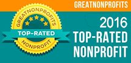
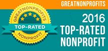

What is the Beat Brigade?
The HandReach Beat Brigade is an outreach program that formed to provide significant training and experience in therapeutic drumming for youth and adults from diverse backgrounds, who travel locally and abroad to facilitate healing drum circles for trauma survivors. Formed under the leadership of Bill Jenkins in Washington, DC, and now settled in Boston under the direction of drummer Martin Isaac, the Beat Brigade serves as a learning laboratory for musicians, healers, youth, and trauma survivors of all ages to explore modalities of healing through rhythm and song.
How to Get Involved
The HandReach BeatBrigade welcomes new members! Anyone in the Boston area with an interest in drumming, art therapy, or working with trauma survivors, domestically or internationally, is encouraged to join us! Our current activities and training sessions are posted at our Meetup.
To inquire about presenting at a Beat Brigade meeting or hiring the Beat Brigade for an event, please inquire via our Contact Form.
Check out Beat Brigade on Facebook


 
